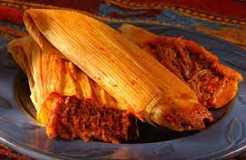

Tamales Recipe

Description
Tamales are a traditional mexican dish made with a corn based dough
mixture that is filled with pork. Tamales are wrapped and cooked in corn husks, but are removed in husks before eating.
While making tamales is a process, its really simple so dont be intimidated!
Ingredients
- Masa Harina: I like the maseca brand which is a common beand found in the Mexican Aisle
- Baking Powder
- Broth: Beef, Chicken, or vegtable will work.
- Salt
- Cumin
- Lard
- Dried Corn Husk
Steps
- Soak the Corn Husk. Place corn husk in bowl of very hot water for 30 minutes or until soft.
- Prepare Desired Fillings. You'll need about 3-4 cups of filling for one batch of tamale dough.
- Make the Masa Dough
- Assemble the Tamale
- Tie the tamale (optional).
- Cook on Stove.